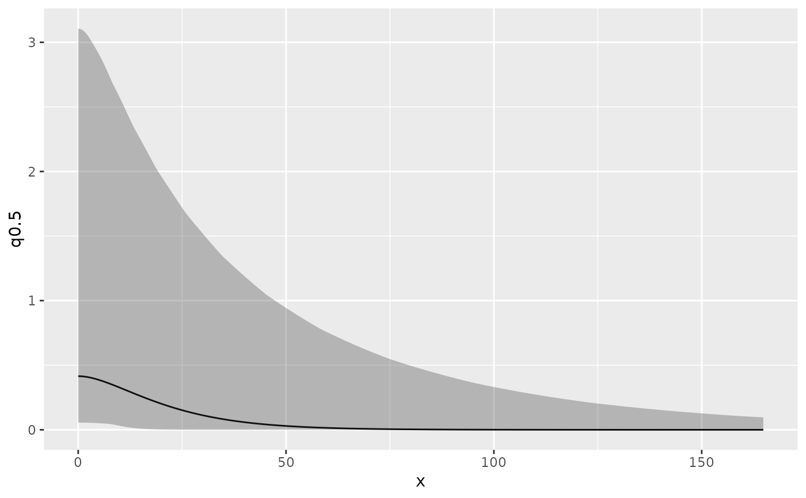

R/spde.R
spde.posterior.RdCalculate posterior distribution of the range, log(range), variance, or log(variance)
parameter of a model's SPDE component. Can also plot Matern correlation or covariance function.
inla.spde.result.
spde.posterior(result, name, what = "range")
| result | An object inheriting from |
|---|---|
| name | Character stating the name of the SPDE effect, see |
| what | One of "range", "log.range", "variance", "log.variance", "matern.correlation" or "matern.covariance". |
A prediction object.
Finn Lindgren Finn.Lindgren@ed.ac.uk
# \donttest{ if (bru_safe_inla()) { # Load 1D Poisson process data data(Poisson2_1D, package = "inlabru") # Take a look at the point (and frequency) data ggplot(pts2) + geom_histogram(aes(x = x), binwidth = 55 / 20, boundary = 0, fill = NA, color = "black") + geom_point(aes(x), y = 0, pch = "|", cex = 4) + coord_fixed(ratio = 1) # Fit an LGCP model with and SPDE component x <- seq(0, 55, length = 20) mesh1D <- INLA::inla.mesh.1d(x, boundary = "free") mdl <- x ~ spde1D(x, model = INLA::inla.spde2.matern(mesh1D)) + Intercept fit <- lgcp(mdl, data = pts2, domain = list(x = mesh1D)) # Calculate and plot the posterior range range <- spde.posterior(fit, "spde1D", "range") plot(range) # Calculate and plot the posterior log range lrange <- spde.posterior(fit, "spde1D", "log.range") plot(lrange) # Calculate and plot the posterior variance variance <- spde.posterior(fit, "spde1D", "variance") plot(variance) # Calculate and plot the posterior log variance lvariance <- spde.posterior(fit, "spde1D", "log.variance") plot(lvariance) # Calculate and plot the posterior Matern correlation matcor <- spde.posterior(fit, "spde1D", "matern.correlation") plot(matcor) # Calculate and plot the posterior Matern covariance matcov <- spde.posterior(fit, "spde1D", "matern.covariance") plot(matcov) }#> Warning: All covariate evaluations for 'Intercept' are NULL; an intercept component was likely intended. #> Implicit latent intercept component specification is deprecated since version 2.1.14. #> Use explicit notation '+ Intercept(1)' instead (or '+1' for '+ Intercept(1)').# }